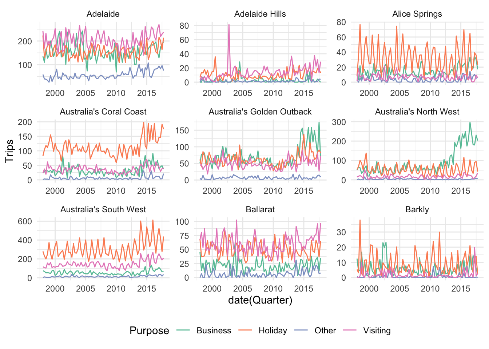
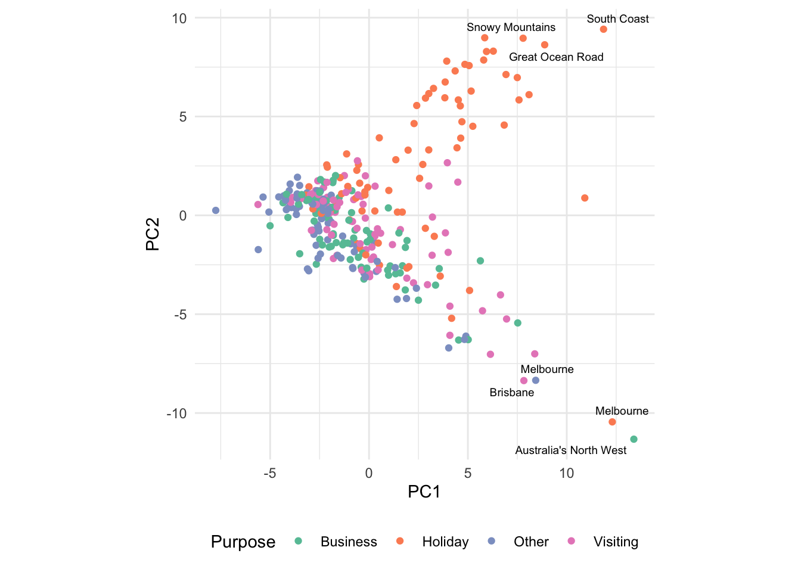
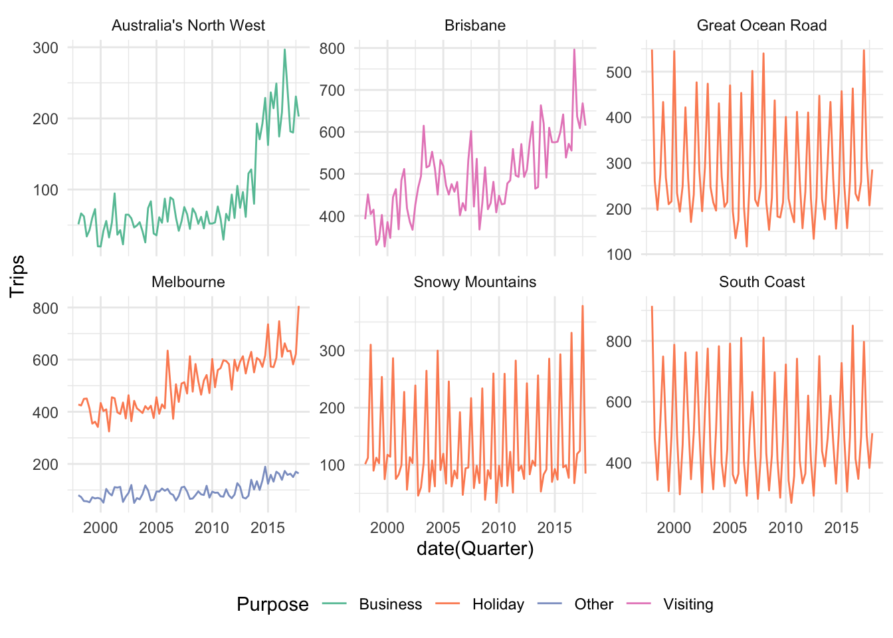

library(broom)
library(tidyverse)
library(feasts)
library(fpp2)
library(ggrepel)
library(tsibble)
library(tsibbledata)
theme_set(theme_minimal())Collections of Time Series
Navigating across related time series.
We have seen ways of visualizing a single time series (seasonal plots, ACF) and small numbers of time series (Cross Correlation). In practice, it’s also common to encounter large collections of time series. These datasets tend to require more sophisticated analysis techniques, but we will review one useful approach, based on extracted features.
The high-level idea is to represent each time series by a vector of summary statistics, like the maximum value, the slope, and so on. These vector summaries can then be used to create an overview of variation seen across all time series. For example, just looking at the first few regions in the Australian tourism dataset, we can see that there might be useful features related to the overall level (Coral Coast is larger than Barkly), recent trends (increased business in North West), and seasonality (South West is especially seasonal).
tourism <- as_tsibble(tourism, index = Quarter) %>%
mutate(key = str_c(Region, Purpose, sep="-")) %>%
update_tsibble(key = c("Region", "State", "Purpose", "key"))
regions <- tourism %>%
distinct(Region) %>%
pull(Region)
ggplot(tourism %>% filter(Region %in% regions[1:9])) +
geom_line(aes(x = date(Quarter), y = Trips, col = Purpose)) +
scale_color_brewer(palette = "Set2") +
facet_wrap(~Region, scale = "free") +
theme(legend.position = "bottom")
- Computing these kinds of summary statistics by hand would be tedious. Fortunately, the feasts package makes it easy to extract a variety of statistics for tsibble objects.
tourism_features <- tourism %>%
features(Trips, feature_set(pkgs = "feasts"))
tourism_features# A tibble: 304 × 52
Region State Purpose key trend_strength seasonal_strength_year
<chr> <chr> <chr> <chr> <dbl> <dbl>
1 Adelaide South Aus… Busine… Adel… 0.464 0.407
2 Adelaide South Aus… Holiday Adel… 0.554 0.619
3 Adelaide South Aus… Other Adel… 0.746 0.202
4 Adelaide South Aus… Visiti… Adel… 0.435 0.452
5 Adelaide Hills South Aus… Busine… Adel… 0.464 0.179
6 Adelaide Hills South Aus… Holiday Adel… 0.528 0.296
7 Adelaide Hills South Aus… Other Adel… 0.593 0.404
8 Adelaide Hills South Aus… Visiti… Adel… 0.488 0.254
9 Alice Springs Northern … Busine… Alic… 0.534 0.251
10 Alice Springs Northern … Holiday Alic… 0.381 0.832
# ℹ 294 more rows
# ℹ 46 more variables: seasonal_peak_year <dbl>, seasonal_trough_year <dbl>,
# spikiness <dbl>, linearity <dbl>, curvature <dbl>, stl_e_acf1 <dbl>,
# stl_e_acf10 <dbl>, acf1 <dbl>, acf10 <dbl>, diff1_acf1 <dbl>,
# diff1_acf10 <dbl>, diff2_acf1 <dbl>, diff2_acf10 <dbl>, season_acf1 <dbl>,
# pacf5 <dbl>, diff1_pacf5 <dbl>, diff2_pacf5 <dbl>, season_pacf <dbl>,
# zero_run_mean <dbl>, nonzero_squared_cv <dbl>, zero_start_prop <dbl>, …- Once you have a data.frame summarizing these time series, you can run any clustering or dimensionality reduction procedure on the summary. For example, this is 2D representation from PCA. We will get into much more depth about dimensionality reduction later in this course — for now, just think of this as an abstract map relating all the time series.
pcs <- tourism_features %>%
select(-State, -Region, -Purpose, -key) %>%
prcomp(scale = TRUE) %>%
augment(tourism_features)
outliers <- pcs %>%
filter(.fittedPC1 ^ 2 + .fittedPC2 ^ 2 > 120)This PCA makes it very clear that the different travel purposes have different time series, likely due to the heavy seasonality of holiday travel (Melbourne seems to be an interesting exception).
ggplot(pcs, aes(x = .fittedPC1, y = .fittedPC2)) +
geom_point(aes(col = Purpose)) +
geom_text_repel(
data = outliers,
aes(label = Region),
size = 2.5
) +
scale_color_brewer(palette = "Set2") +
labs(x = "PC1", y = "PC2") +
coord_fixed() +
theme(legend.position = "bottom")
- We can look at the series that are outlying in the PCA. The reading has some stories for why these should be considered outliers. They seem to be series with substantial increasing trends or which have exceptionally high overall counts.
outlier_series <- tourism %>%
filter(key %in% outliers$key)
ggplot(outlier_series) +
geom_line(aes(x = date(Quarter), y = Trips, col = Purpose)) +
scale_color_brewer(palette = "Set2") +
facet_wrap(~Region, scale = "free_y") +
theme(legend.position = "bottom")
- This featurization approach is especially powerful when combined with coordinated views. It is possible to link the points in the PCA plot with the time series display, so that selecting points in the PCA shows the corresponding time series.